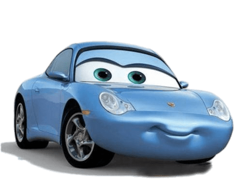

Character Design
Animation
Character department manager Jay Ward explained how they wanted the cars to look as realistic as possible, saying: "John didn't want the cars to seem clay-like or mushy. He insisted on truth to materials. This was a huge thing for him. He told us that steel needs to feel like steel. Glass should feel like glass. These cars need to feel heavy. They weigh three or four thousand pounds. When they move around, they need to have that feel. They shouldn't appear light or overly bouncy to the point where the audience might see them as rubber toys." According to directing animator James Ford Murphy, "Originally, the car models were built so they could basically do anything. John kept reminding us that these characters are made of metal and they weigh several thousand pounds. They can't stretch. He showed us examples of very loose animation to illustrate what not to do."
Character shading supervisor on the film Thomas Jordan explained that chrome and car paint were the main challenges on the film, saying: "Chrome and car paint were our two main challenges on this film. We started out by learning as much as we could. At the local body shop, we watched them paint a car, and we saw the way they mixed the paint and applied the various coats. We tried to dissect what goes into the real paint and recreated it in the computer. We figured out that we needed a base paint, which is where the color comes from, and the clearcoat, which provides the reflection. We were then able to add in things like metallic flake to give it a glittery sparkle, a pearlescent quality that might change color depending on the angle, and even a layer of pin-striping for characters like Ramone." Supervising technical director on the film Eben Ostby explained that the biggest challenge for the technical team was creating the metallic and painted surfaces of the car characters, and the reflections that those surfaces generate, saying: "Given that the stars of our film are made of metal, John had a real desire to see realistic reflections, and more beautiful lighting than we've seen in any of our previous films. In the past, we've mostly used environment maps and other matte-based technology to cheat reflections, but for Cars we added a ray-tracing capability to our existing Renderman program to raise the bar for Pixar."
Characters
Lightning McQueen
Tow Mater
Sally Carrera

Doc Hudson
Strip 'The King' Weathers